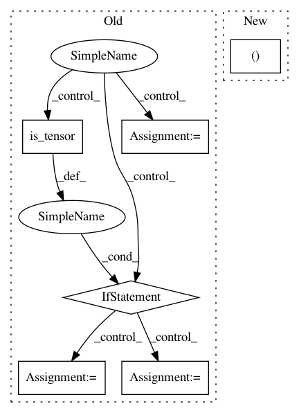

7391aec984c1e9e0899d51e6b0538483c37ec8fb,torchdiffeq/_impl/adjoint.py,,odeint_adjoint,#Any#Any#Any#Any#Any#Any#Any#Any#Any#Any#Any#Any#,115
Before Change
if adjoint_options is None:
adjoint_options = options
tensor_input = False
if torch.is_tensor(y0):
class TupleFunc(nn.Module):
def __init__(self, base_func):
super(TupleFunc, self).__init__()
self.base_func = base_func
def forward(self, t, y):
return (self.base_func(t, y[0]),)
tensor_input = True
y0 = (y0,)
func = TupleFunc(func)
params = tuple(func.parameters())
if adjoint_buffers:
params = params + tuple(buffer for buffer in func.buffers() if buffer.requires_grad)
n_tensors = len(y0)
After Change
if adjoint_params is None:
adjoint_params = tuple(func.parameters())
tensor_input, shapes, func, y0, t, options = _check_inputs(func, y0, t, options)
solution = OdeintAdjointMethod.apply(func, y0, t, rtol, atol, method, options, adjoint_rtol, adjoint_atol,
adjoint_method, adjoint_options, t.requires_grad, *adjoint_params)
In pattern: SUPERPATTERN
Frequency: 3
Non-data size: 6
Instances
Project Name: rtqichen/torchdiffeq
Commit Name: 7391aec984c1e9e0899d51e6b0538483c37ec8fb
Time: 2020-07-27
Author: 33688385+patrick-kidger@users.noreply.github.com
File Name: torchdiffeq/_impl/adjoint.py
Class Name:
Method Name: odeint_adjoint
Project Name: asyml/texar
Commit Name: 54fed17211d0b077579fba58e93075aee9312668
Time: 2019-04-05
Author: zhitinghu@gmail.com
File Name: texar/modules/decoders/transformer_decoders.py
Class Name: TransformerDecoder
Method Name: __init__
Project Name: asyml/texar
Commit Name: 54fed17211d0b077579fba58e93075aee9312668
Time: 2019-04-05
Author: zhitinghu@gmail.com
File Name: texar/modules/decoders/rnn_decoder_base.py
Class Name: RNNDecoderBase
Method Name: __init__